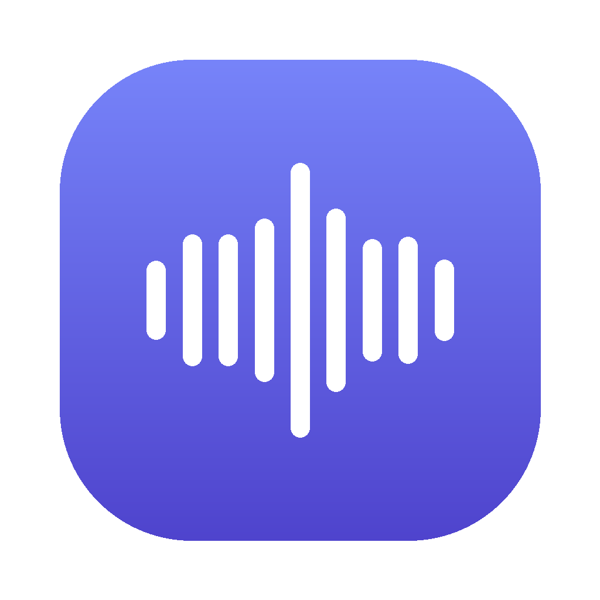

LocalFlow
Private push-to-talk dictation for Windows and Mac
Hold a hotkey, talk, let go: your words are typed into whatever app you're using. Speech recognition runs on your own computer, with no account and nothing sent to the cloud unless you choose to.
Download for WindowsInstaller · Windows 10/11 x64
Download for Mac (Apple Silicon).dmg · M1 and later
Download for Mac (Intel).dmg
Prefer no installer? Portable zips: Windows · Mac Apple Silicon · Mac Intel. All releases.
What it does
- Hold to talk, release to paste into the focused app. Tap Space while holding for hands-free.
- Live typing: words appear as you speak, or keep it listening with one hotkey and pause it with the same key.
- Learns your words: fix a transcript once and it spells that name or term right from then on.
- Transcript history and clipboard, custom vocabulary and replacements, per-app control of where it types.
- Optional AI clean-up using your existing Claude or ChatGPT subscription, and optional online transcription (Groq, OpenAI).
First launch
LocalFlow isn't code-signed yet, so your system will warn you once.
Windows: if SmartScreen appears, click More info → Run anyway.
Mac: drag it to Applications, open it, then go to System Settings → Privacy & Security and click Open Anyway. Allow Microphone, Accessibility and Input Monitoring when asked.
Windows: if SmartScreen appears, click More info → Run anyway.
Mac: drag it to Applications, open it, then go to System Settings → Privacy & Security and click Open Anyway. Allow Microphone, Accessibility and Input Monitoring when asked.